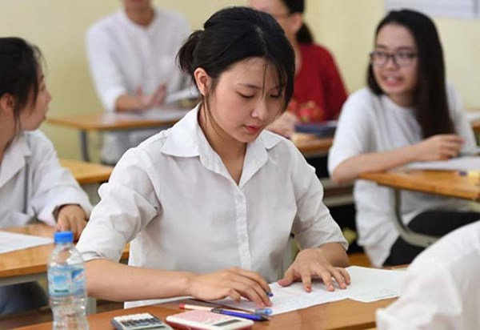

Kỳ Thi THPT QG 2018

Công bố lịch thi THPT quốc gia 2018
Bộ GD-ĐT vừa công bố kỳ thi THPT quốc gia 2018. Theo đó kỳ thi sẽ diễn ra trong 3 ngày, từ 25-27.6. Thí sinh sẽ làm 5 bài thi gồm 3 bài thi độc lập là Toán, Ngữ văn, Ngoại ngữ và 2 bài thi tổ hợp là Khoa học Tự nhiên (tổ hợp các môn Vật lý, Hóa học, Sinh học) và Khoa học xã hội (tổ hợp các môn Lịch sử, Địa lý, Giáo dục công dân).
Hình thức thi: Các bài thi Toán, Ngoại ngữ và các bài thi tổ hợp thi theo hình thức trắc nghiệm, trong đó bài thi Toán có thời gian 90 phút, Ngoại ngữ 60 phút. Các bài thi tổ hợp có tổng thời gian 150 phút, mỗi môn thành phần trong bài thi có thời gian là 50 phút. Ngữ văn thi theo hình thức tự luận trong 150 phút.
Bộ GDĐT lưu ý 6 điểm mới về kỳ thi THPT quốc gia 2018 thí sinh cần biết
Về cơ bản Kỳ thi THPT quốc gia năm nay được giữ ổn định như năm 2017. Tuy nhiên vẫn có một số điểm mới, chủ yếu nằmở khâu đề thi, nhằm đảm bảo kỳ thi diễn ra công bằng, khách quan.
1. Nội dung đề thi chủ yếu nằm trong chương trình lớp 12.
2. Xây dựng quy luật phát đề thi cho thí sinh.
3. Bỏ một bài thi tự chọn sẽ không được xét tốt nghiệp.
4. Mỗi thí sinh chỉ có một phiếu trả lời trắc nghiệm.
5. Rút ngắn thời gian chờ giữa các môn thi trong bài tổ hợp.
6. Điểm thi được làm tròn đến hai chữ số thập phân.

ĐĂNG KÝ XÉT TUYỂN VÀO TRƯỜNG ĐHBK HÀ NỘI THEO KẾT QUẢ THI THPT QUỐC GIA NĂM 2018
Thí sinh đăng ký xét tuyển vào Trường Đại học Bách khoa Hà Nội nếu có đủ điều kiện tham gia tuyển sinh đại học theoquy định tại Quy chế tuyển sinh hiện hành; có học lực trong 3 năm THPT và điểm thi của tổ hợp môn xét tuyển trong kỳ thi THPT Quốc gia 2018 đạt yêu cầu của Trường (thông báo sau khi có kết quả thi THPT Quốc gia 2018).
Thí sinh đăng ký nguyện vọng theo ngành/chương trình đào tạo (gọi tắt là ngành). Mỗi ngành được ấn định một mã xét tuyển và chỉ tiêu tuyển sinh được liệt kê trong bảng dưới đây. Mỗi ngành chỉ có một điểm chuẩn trúng tuyển được áp dụng cho tất cả các tổ hợp môn xét tuyển của ngành đó. Do đó thí sinh lựa chọn và chỉ đăng ký một tổ hợp môn có kếtquả thi tốt nhất.

Cao đẳng thực hành FPT Polytechnic thông báo đăng kí xét tuyển năm 2018
Chương trình đào tạo của FPT Polytechnic tuân theo chuẩn khung chương trình của BTEC, Vương quốc Anh. Sách giáo trình, tài liệu học tập được chuyển ngữ sang Tiếng Việt từ các bộ sách uy tín của các NXB lớn trên thế giới như Pearson, Cengage, Mc-Graw Hills, … Học liệu được các cán bộ có uy tín của Trường Đại học FPT thiết kế, biên tập và chuyển tải trên việc áp dụng hệ thống công nghệ thông tin.
Tất cả sinh viên đều có quyền học tập và có quyền được cung cấp một học vấn, kỹ năng phù hợp với năng lực. FPT Polytechnic cung cấp một chương trình học tập thiên về thực hành với mục tiêu chỉ cần sinh viên chăm chỉ, có ý thứchọc hỏi, cầu tiến thì sẽ đáp ứng được nhu cầu việc làm của doanh nghiệp.
>